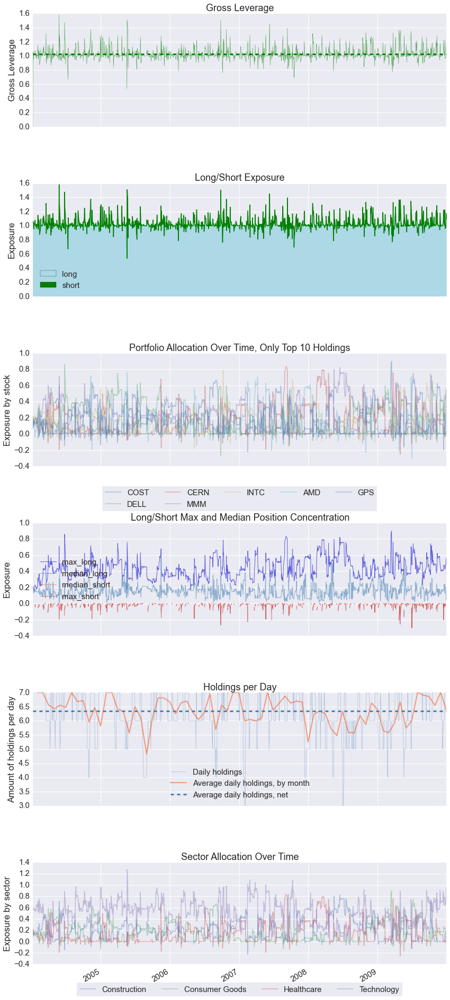

Sector Mappings
To generate sector allocation plots in the positions tearsheet and PnL by sector in the round trips tearsheet, you must pass pyfolio a dictionary (or dict-like data struction) of symbol-sector mappings, where symbols are keys and sectors are values. create_full_tearsheet will also take symbol-sector mappings as keyword argument sector_mappings.
%matplotlib inline
import pyfolio as pf
import gzip
import os
import pandas as pd
transactions = pd.read_csv(gzip.open('../tests/test_data/test_txn.csv.gz'),
index_col=0, parse_dates=0)
positions = pd.read_csv(gzip.open('../tests/test_data/test_pos.csv.gz'),
index_col=0, parse_dates=0)
returns = pd.read_csv(gzip.open('../tests/test_data/test_returns.csv.gz'),
index_col=0, parse_dates=0, header=None)[1]
gross_lev = pd.read_csv(gzip.open('../tests/test_data/test_gross_lev.csv.gz'),
index_col=0, parse_dates=0, header=None)[1]
returns.index = returns.index.tz_localize("UTC")
positions.index = positions.index.tz_localize("UTC")
transactions.index = transactions.index.tz_localize("UTC")
gross_lev.index = gross_lev.index.tz_localize("UTC")
positions.head(2)
| AMD | CERN | COST | DELL | GPS | INTC | MMM | cash | |
|---|---|---|---|---|---|---|---|---|
| index | ||||||||
| 2004-01-09 00:00:00+00:00 | 6961.92 | 21017.07875 | 7282.266152 | 21264.55188 | 7091.080020 | 21259.33389 | 21316.129606 | -6192.360298 |
| 2004-01-12 00:00:00+00:00 | 18198.58 | 18071.25000 | 17675.836401 | 10804.31924 | 10685.411865 | 17872.47748 | 10882.026400 | -3329.289887 |
sect_map = {'COST': 'Consumer Goods',
'INTC': 'Technology',
'CERN': 'Healthcare',
'GPS': 'Technology',
'MMM': 'Construction',
'DELL': 'Technology',
'AMD': 'Technology'}
pf.create_position_tear_sheet(returns, positions, gross_lev=gross_lev, sector_mappings=sect_map)
Top 10 long positions of all time (and max%)
['COST' 'DELL' 'CERN' 'MMM' 'INTC' 'AMD' 'GPS']
[ 0.9 0.857 0.835 0.821 0.786 0.758 0.622]
Top 10 short positions of all time (and max%)
['AMD' 'DELL' 'CERN' 'MMM' 'GPS' 'INTC' 'COST']
[-0.301 -0.266 -0.255 -0.226 -0.201 -0.185 -0.164]
Top 10 positions of all time (and max%)
['COST' 'DELL' 'CERN' 'MMM' 'INTC' 'AMD' 'GPS']
[ 0.9 0.857 0.835 0.821 0.786 0.758 0.622]
All positions ever held
['COST' 'DELL' 'CERN' 'MMM' 'INTC' 'AMD' 'GPS']
[ 0.9 0.857 0.835 0.821 0.786 0.758 0.622]

pf.create_round_trip_tear_sheet(positions, transactions, sector_mappings=sect_map)
duration pnl returns long
count 1430 1430.000000 1430.000000 1430
mean 9 days 16:40:56.154545 45.737238 0.003543 0.523077
std 22 days 02:16:41.165898 1616.537844 0.031288 0.499642
min 0 days 00:00:00 -30697.460000 -0.218045 False
25% 0 days 23:59:59 -5.773144 -0.011450 0
50% 2 days 23:59:59 0.871629 0.003885 1
75% 5 days 23:59:59 40.438366 0.018126 1
max 286 days 00:00:00 17835.869482 0.204385 True
Percent of round trips profitable = 57.2%
Mean return per winning round trip = 0.02181
Mean return per losing round trip = -0.02108
A decision is made every 1.053 days.
0.9495 trading decisions per day.
19.94 trading decisions per month.
Profitability (PnL / PnL total) per name:
symbol
COST 0.398964
INTC 0.382659
CERN 0.323077
MMM 0.221479
GPS 0.049385
AMD -0.064091
DELL -0.311473
Name: pnl, dtype: float64
Profitability (PnL / PnL total) per name:
symbol
Consumer Goods 0.398964
Healthcare 0.323077
Construction 0.221479
Technology 0.056480
Name: pnl, dtype: float64
<matplotlib.figure.Figure at 0x109d0f650>